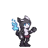
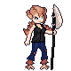
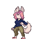
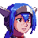

Not affiliated with Anode Heart.
Anode Heart Steam page Anode Heart Discord
For installing mods or sprites, you need to install the mod framework. This is very simple !
- Download Bepinex, follow the instruction of their website.
- Unzip the entire content in your game folder Program Files (x86)\Steam\steamapps\common\AnodeHeart\
- Launch the game one time to let Bepinex set up the configuration.
- Now you can quit the game and install plugins and mods !
Download mods below which are .dll and put them on the AnodeHeart\BepInEx\plugins.
EasySave Plugin
- Download the latest plugin (.dll) here: Releases
- This plugin will let you easily save everywhere with F4 (then just restart on the menu for load).
- You can also with F5 do a quick save, then F9 for quickload.
Texture Replacement Plugin
- Download the latest plugin (.dll) here: Releases
- This plugin will let you easily replace any monsters sprites or the player.
- Launch the game one time to let the Plugin set up the configuration.
- Below on the page, you will have some examples.
- Download them then unzip the content on the AnodeHeart\ModAssets\Replacements
- Require Texture Replacement Plugin
- Launch the game one time for let the plugin setup the folder.
- Unzip the content on the AnodeHeart\ModAssets\Replacements\
- Per example Averat need to be AnodeHeart\ModAssets\Replacements\Monsters\Averat
- Player need to be AnodeHeart\ModAssets\Replacements\Player
Waifu Examples
  
- Download Waifu sprites
- Contains some replacement of monsters
Lea Player Example

- Download Lea from CrossCode
- Replace the Player with Lea from the CrossCode Game
Default Player Example

- Download Default Player for Spriters
- Used for spriters, contains every animation used per the Texture Replacement Plugin (LowRes and FlatLand excluded)